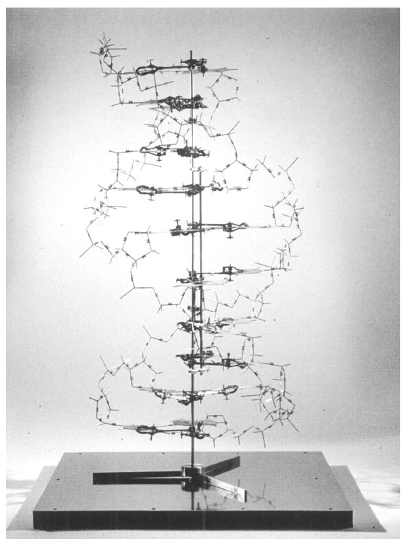

基因是否属于有机分子一级？
在讨论基因是否属于有机分子的问题中。牵涉到它们的稳定性的性质。我们所谓的稳定性，可能只指基因围绕一定的众数而变化的倾向，也可能指基因像有机分子稳定的那种稳定。如果后一个解释能够成立，那么，遗传问题便会简化多了。另一方面，如果我们认为基因只是一定数量的物质，那么，我们便不能圆满地解答为什么基因历经异型杂交中的变化而依然如此恒定，除非我们求助于基因以外另一种保证它们恒定的神秘的组织力量。这个问题目前还没有解决的希望。几年以前，我曾经企图计算基因的大小，希望从这里可以给这个问题一线光明，可是现在我还缺乏十足精确的测量，以致这样的计算充其量也不过是臆想而已。测算似乎表明基因的大小大约和大型有机分子接近。如果这种结果有一点价值的话，也许这就指明了，基因并不太大，以致不能当成一个化学分子，我们的推论只能到此为止。基因甚至可能不是一个分子，而是一群非化学性结合的有机物质。
虽然如此，我们仍然很难放弃这个可爱的假设：就是基因之所以稳定，是因为它代表着一个有机的化学实体。这是现在人们能够作出的最简单的假设，并且，这项见解既然符合于有关基因稳定性的已知事实，那么，至少它不失为一个良好的试用假说。

沃森和克里克用铁丝建成的DNA模型